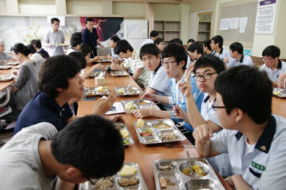

Perkenalan
Kantin Suka-Suka adalah tempat makan santai di lingkungan SMK Kristen Sejahtera yang menyajikan berbagai makanan berat, camilan, dan minuman yang menyegarkan dengan harga ramah di kantong siswa, guru, maupun staf sekolah.
Dirancang agar pas untuk waktu istirahat singkat maupun obrolan santai setelah jam pelajaran sekolah berakhir.
